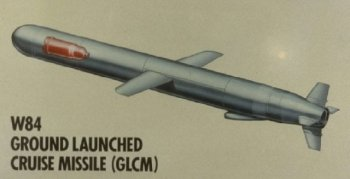
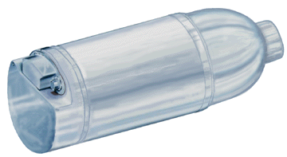
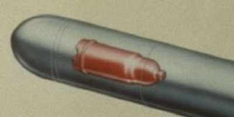

|  Click for larger image |
 This image is from the Lawrence Livermore National Laboratory Directorate of Nuclear Weapon website, which was taken after the Wen Ho Lee scandal broke. |
|  | |
The W-84 is the warhead formerly used on the ground launched cruise missiles (GLCM) which was scrapped under the INF (Intermediate Nuclear Forces) Treaty. It now exists as the sole warhead in the inactive stockpile (eventually to be joined by B61, W62, W76, and W80 warheads also). As an inactive warhead, it lacks the tritium required for operation at anything above its lowest yield. Along with the W80 it is part of the B61 derived warhead family.
| Available Yields (Kt) | 0.2 / ? /150 |
|---|---|
| Weight | Heavier than the W80 |
| Length | About 41 in |
| Diameter | Similar to W80 |
| Number In Service | None |
| Number In Inactive Stockpile | 350 |
Two stage radiation implosion weapon.
The W-84 is based on the W-61 design, so the exterior appearance of the two warheads is probably very similar (if not identical). This is also true of other B-61 derivatives: the W-80 (still in the active stockpile), the W-81 (no longer in existence), and the W-85 (converted to the B-61). See B61 and W80 for discussion of probable design features. Specifically, it is a modified B61 Mod 3/4 design.
Primary design probably beryllium reflected plutonium core.
Deuterium-tritium boosted
Contains oralloy, probably in the fusion pusher/tamper to create enhanced fission yield from fusion neutrons
Probably contains lithium-6 (95% enrichment) deuteride fusion fuel
Uses LX-17 insensitive high explosive (IHE) as main explosive - a TATB plastic bonded explosive composition.
Originally ground launched cruise missile, which has been scrapped. Probably could be adapted to use in other cruise missiles, or bombs relatively easily.
See Principles of Nuclear Weapons Security and Safety for explanations of these features.
Designed and developed by Lawrence Livermore National Laboratory (LLNL). Suffered some development problems, including a substandard yield on a simulated aging proof test conducted after deployment. The problem was successfully corrected and proof fired without modifying the nuclear assembly subsystem.
| September 1978 | Development engineering begun at LLNL |
|---|---|
| December 1980 | Production engineering on W84 begins |
| June 1983 | First production units of the W84 completed |
| September 1983 | Quantity production of the W84 begins |
| 2 August 1984 | Proof tested in Fusileer Correo (15:00:00.094 UCT), test depth -1099 ft, yield <20 Kt |
Initial manufacture of W84 was June 1984
Post deployment stockpile problems noted.
Initial deployment of W84 on GLCM was December 1983
350 W84 warheads were manufactured.
The 350 W84 warheads will be retained indefinitely in the inactive stockpile
{kind=link}